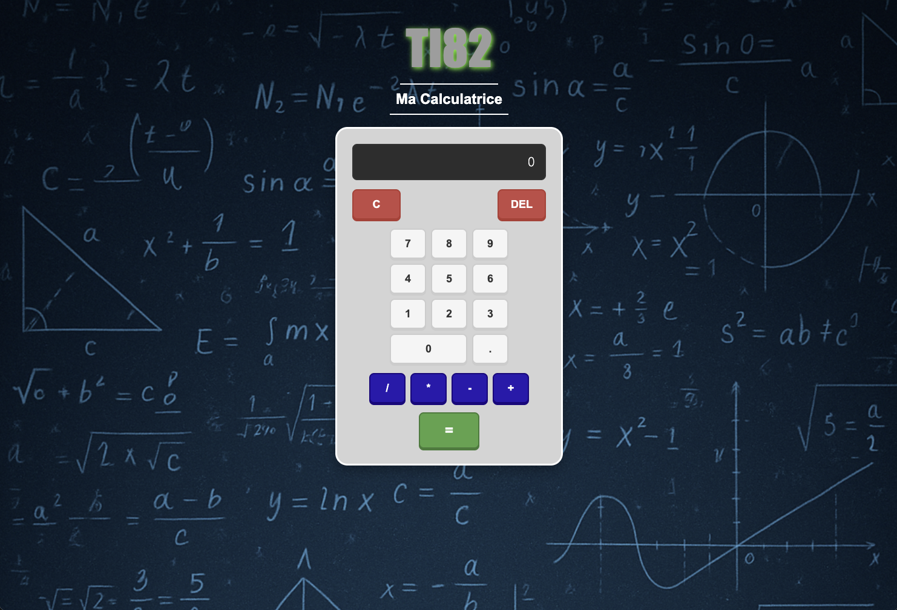

Calculatrice
Calculatrice web moderne avec historique des calculs et design responsive.

Stack
- HTML/CSS/JavaScript
- LocalStorage pour l'historique
Fonctionnalités
- Opérations mathématiques de base
- Historique des calculs
- Interface intuitive et responsive
- Gestion des erreurs
- Accessibilité (navigation clavier)
- Thème moderne
Apprentissages
- Logique de calcul et gestion des opérations
- Gestion des états d'interface
- Validation et gestion d'erreurs
- Stockage local de l'historique
- Design d'interface utilisateur intuitive